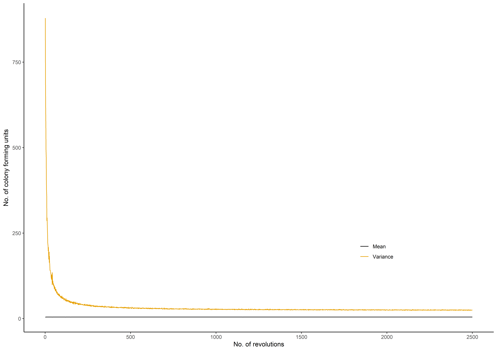

R/sim_meanvar_stages.R
sim_meanvar_stages.RdThis function provides the mean and variance of the expected number of CFUs at each mixing stage.
sim_meanvar_stages(mu, sigma, alpha_in, k, l, r, distribution, n_sim)the average number of CFUs (\(\mu\)) in the mixed sample, which is in a logarithmic scale if we use a Lognormal / Poisson lognormal distribution
the standard deviation of the colony-forming units in the mixed sample on the logarithmic scale (default value 0.8)
concentration parameter at the initial stage
number of small portions / primary samples
number of revolutions / stages
the rate of the concentration parameter changes at each mixing stage
what suitable distribution type we have employed for simulation such as "Poisson-Type A" or "Poisson-Type B" or "Lognormal-Type A" or "Lognormal-Type B" or "Poisson lognormal-Type A" or "Poisson lognormal-Type B"
number of simulations
Mean and variance changes at each mixing stage.
Let \(N'\) be the number of colony-forming units in the mixed sample which is produced by mixing of \(k\) primary samples and \(N' = \sum N_i\). This function produces a graphical display of the mean and variance changes at each mixing stage. It is helpful to identify the optimal number of revolutions of the mixture, which is a point of mixing that initiates Poisson-like homogeneity.
mu <- 100
sigma <- 0.8
alpha_in <- 0.01
k <- 30
l <- 2500
r <- 0.01
distribution <- "Poisson lognormal-Type B"
n_sim <- 2000
result1 <- sim_meanvar_stages(mu, sigma , alpha_in, k, l, r, distribution, n_sim)
melten.Prob <- reshape2::melt(result1, id = "Revolutions",
variable.name = "summary", value.name = "Value")
plot_example <- ggplot2::ggplot(melten.Prob, ggplot2::aes(x = Revolutions,
y = Value, group = summary, colour = summary)) +
ggplot2::geom_line(ggplot2::aes(x = Revolutions, y = Value)) +
ggplot2::ylab(expression("No. of colony forming units")) +
ggplot2::theme_classic() + ggplot2::xlab(expression("No. of revolutions")) +
ggplot2::theme(plot.title = ggplot2::element_text(hjust = 0.5),
legend.position = c(0.75,0.25),legend.title = ggplot2::element_blank()) +
ggthemes::scale_colour_colorblind()
plot_example
